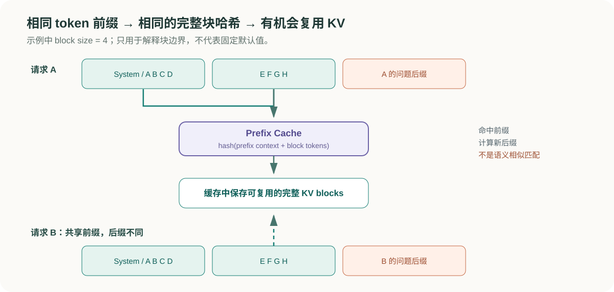

第 09 章 · KV Cache 与内存管理
Automatic Prefix Caching：哈希、复用与安全边界
RAG、长文档问答、Few-shot 评测和多轮对话都会重复发送部分上下文。Automatic Prefix Caching（APC）让 vLLM 有机会复用之前已经计算的 KV 状态，减少重复 Prefill；但它依赖精确的 token 前缀、缓存块边界和运行时生命周期。
假设一个应用每次请求都带上相同的 system prompt 和一份 20 页的产品手册，只在最后替换用户问题。如果每次都从头 Prefill，模型就会反复计算那份相同上下文。APC 的想法很直接：如果新请求的前缀与之前某个请求完全一致，而且对应 KV Cache 仍然可用，就复用那部分计算结果。注意，这里判断的是模型实际看到的 token 与缓存键，而不是两段文字在语义上是否相似。
读完这一章，你应该能够
- 解释 vLLM 为什么使用 parent-hash 链来识别一个 KV block。
- 区分物理 Cache Block、Hash Block Size 和实际 Cache Hit Alignment。
- 描述 Block Pool、引用计数、Free Queue 和 LRU 淘汰的完整生命周期。
- 设计冷缓存 / 热缓存对照实验，并用 TTFT、Prefill 和命中指标评估收益。
- 理解 cache_salt 的隔离作用，以及它不能替代 API 鉴权的原因。

9.1 为什么重复 Prefill 浪费计算？
在标准自回归推理中，Prefill 会处理 Prompt 并产生每层的 K/V；Decode 则逐步生成新 token，并读取已经保存的历史 K/V。若多个请求共享一段完全相同的 Prompt 前缀，重复 Prefill 就会重复计算这部分相同的注意力状态。
APC 可以出现在这些工作负载中：
- 长文档问答：同一份手册或报告被多次提问，只改变最后的问题。
- RAG：系统提示词、输出格式规则或一组稳定的检索上下文在很多请求间重复。
- Few-shot 评测：多个样本共享相同的演示示例，只替换最后一个测试输入。
- 多轮对话：后续轮次包含之前已经处理过的对话历史。
APC 复用的是模型已经算出的 KV 状态，不是把一段语义相似的文字映射到同一个向量，也不是检索一份相近文档。它不需要改变模型权重或输出采样策略，但要求被复用的上下文与缓存键严格匹配。
9.2 Hash Chain：一个 KV block 如何被唯一识别？
vLLM V1 使用链式哈希识别前缀块。一个块的缓存键不仅包含当前块的 token IDs，也包含前一个块的 hash。概念上可以写成：
H_i = Hash(H_(i-1), TokenIDs_i, ExtraKeys_i)第一块没有父 hash，因此使用一个初始 seed。第二块把第一块的 hash 作为父节点；第三块再把第二块的 hash 作为父节点。这样，当前块的身份不仅取决于块内 token，也取决于它前面的完整上下文。
H0 = Hash(NONE_HASH, tokens[0:4], extra_keys_0)
H1 = Hash(H0, tokens[4:8], extra_keys_1)
H2 = Hash(H1, tokens[8:12], extra_keys_2)假设 block size = 4，两个请求在前 8 个 token 完全一致：
| 请求 | Block 0 | Block 1 | Block 2 |
|---|---|---|---|
| 请求 A | [S, A, B, C] | [D, E, F, G] | [Question A] |
| 请求 B | [S, A, B, C] | [D, E, F, G] | [Question B] |
若 Tokenizer、模型身份和额外 hash 输入也一致，请求 B 的 H0、H1 就有机会命中请求 A 之前留下的缓存；从不同的 Question 后缀开始，需要继续计算新的 KV 状态。
为什么 hash 还需要 ExtraKeys？
仅比较 token IDs 还不够。当前实现会根据请求内容把额外身份信息加入 hash，例如：
- LoRA adapter ID：不同 Adapter 的模型状态不能因为 Prompt 一样就混用。
- 多模态输入 hash：图像等输入会变成占位 token / embedding；必须区分实际多模态内容。
- cache_salt：在首个块中加入隔离值，限制不同信任域之间的缓存共享。
- Prompt Embeddings digest：使用输入 embedding 时，缓存键还要反映对应输入内容。
当前默认哈希算法是 SHA-256。sha256_cbor 使用 canonical CBOR 序列化，适合需要跨语言、跨环境可复现哈希的场景；xxhash 速度较快但不是抗碰撞的密码学哈希，不能只从速度角度决定是否启用。
精确 token 前缀，不是相同文本外观。空格、特殊 token、消息顺序、Chat Template、Tokenizer revision、LoRA 或图像内容只要改变了 hash 输入，后续块的父 hash 链就可能不同。语义接近、字符串相似或向量相似，都不构成 APC 命中条件。
9.3 物理 Block 与匹配粒度：三个尺寸必须分开
读 Prefix Cache 源码时，最容易把三个概念混为一谈：
| 概念 | 它控制什么 | 直观理解 |
|---|---|---|
| Physical Block Size | 一个物理 KV Cache block 能容纳多少 token 状态 | 显存页 / 物理存储单位 |
| Hash Block Size | 请求的 block hash 以多少 token 为粒度计算 | 缓存键的切分粒度 |
| Cache Hit Alignment | 一次缓存命中最终允许落在哪些 token 边界 | 调度器能够安全接续计算的位置 |
在常见的单一 KV Cache group 路径中，当前实现让 hash block size 与 scheduler block size 对齐；如果启用 block hashing，传入不同的 prefix_match_unit 会被拒绝，而不是静默地变成任意细粒度命中。
多 KV Cache group（例如混合 Attention / Mamba）会更复杂：hash block size 可以由各个 prefix-cacheable group 的 block size 的最大公约数推导，也可以在满足整除约束时显式设置 prefix_match_unit。但这只说明 hash 可以按更细粒度计算，不代表所有模型都能在任意细粒度边界恢复状态。
特殊路径：混合 Mamba 模型。当前文档提供 --enable-mamba-shared-prefix-checkpoint，用于在共享前缀分叉位置保存 Mamba state checkpoint。它要求启用 Prefix Caching，并且 --prefix-match-unit 小于 Mamba block size；该值还必须满足所有 prefix-cacheable group 的 block size 整除约束和模型状态压缩对齐要求。
# 仅适用于满足官方约束的 hybrid Mamba 模型
vllm serve <hybrid-model> \\
--enable-prefix-caching \\
--prefix-match-unit 64 \\
--enable-mamba-shared-prefix-checkpoint在这类特定路径中，当前代码可以为一个已有物理 block 注册 partial cache entry，让细粒度前缀边界能够定位到该物理块；这份 partial entry 是查找元数据，不是再分配或复制一个新的物理 KVCacheBlock。普通整块缓存与这种特殊的 sub-block 共享前缀检查点必须分开讲。
另一个边界：当整个 Prompt 都命中缓存时，模型仍然需要重新计算最后一个 token 来得到 logits。当前分配路径还要求计算进度满足 block 对齐，因此某些情况下可能需要重算最后一个完整 block，而不只是一个 token。
9.4 命中、引用计数与 LRU 淘汰：缓存为什么不会永久保留？
V1 的 Prefix Cache 不只是一个 hash map。它围绕固定大小的 Block Pool 管理物理块、请求到块的映射、哈希到块的映射，以及空闲块队列。可以把一次命中和释放过程拆成五步：
- Lookup：新请求从前缀起点开始计算 hash，并按顺序查找最长连续命中。由于 hash 是链式的，某一块缺失后，后续块通常也无法沿着同一条父 hash 链继续命中。
- Touch：命中的 block 被请求引用，
ref_cnt增加；若它原本位于 free queue，就会从可淘汰队列中移除，避免活动请求仍在读取时被覆盖。 - Allocate：请求未命中的后缀继续分配新 blocks，并执行剩余 Prefill / Decode。
- Free：请求结束时减少引用计数；只有不再被任何活动请求引用的块，才会重新进入 free queue。
- Evict：当需要物理块时，系统从 free queue 的 LRU 端取出候选块。如果该块仍有缓存 hash，就先移除缓存映射，再把物理块重新分配。
交互观察：一个缓存块如何从命中走到淘汰？
命中：请求通过 hash 找到已有 KV block。此时还不能简单把它视作空闲空间，因为请求即将读取其中的 K/V。
增加 ref_cnt：管理器增加引用计数，并把仍被请求使用的块从 free queue 移出。即使它带有缓存 hash，也不能被新请求覆盖。
释放：请求结束后减少引用计数；当 ref_cnt 归零，块才重新进入 free queue，保留的 hash 使它仍有机会被未来请求复用。
淘汰：空间不足时，LRU 队列头部的缓存候选被取出，hash 映射被删除，物理 block 才能被重新分配。被淘汰的前缀之后再出现时，需要重新计算。
这也解释了为什么“缓存命中”不等于“永远不用再计算”：缓存有容量上限；请求可能被路由到另一台没有对应本地块的实例；缓存块也可能为了给新请求腾空间而被淘汰。
如果模型权重或 Adapter 发生变化，旧 KV 状态也不应该被当成新权重下的结果继续使用。当前 KV Cache Manager 提供 reset prefix cache 的路径，适用于权重更新后的缓存重置和基准测试前的状态清理。
9.5 如何测量实际收益：冷缓存与热缓存对照
APC 主要减少重复 Prefill 工作，不会直接减少 Decode 阶段生成新 token 的计算。因此，若请求的输出特别长、Prompt 很短，或不同请求之间几乎没有相同前缀，收益可能很小。
建议设计一个可复现的 A/B 实验：
- 固定模型 revision、Tokenizer revision、vLLM 版本、GPU 和并行布局。
- 固定精确的 Prompt token 序列、输出长度、采样参数、并发和请求到达节奏。
- 先清理或重启缓存，运行冷缓存测试并记录基线。
- 用相同的共享前缀重复请求，确保请求被路由到同一个缓存实例，再运行热缓存测试。
- 对比 Prefix Cache hits / queries、Prefill 时间、TTFT、端到端延迟和输出 token 吞吐。
| 观测量 | 它回答什么问题 | 容易犯的错误 |
|---|---|---|
vllm:prefix_cache_hits | 有多少缓存查询成功复用 | 把累计 counter 当作瞬时命中率 |
vllm:prefix_cache_queries | 缓存查询规模有多大 | 不同时间窗口或不同流量直接相除 |
vllm:request_prefill_time_seconds | Prefill 工作是否减少 | 不控制 Prompt 长度与排队时间 |
vllm:time_to_first_token_seconds | 用户是否更快看到第一个 token | 忽略请求排队、网络和服务端负载 |
vllm:inter_token_latency_seconds | Decode 阶段 token 间隔是否变化 | 误以为 APC 应该显著改善长输出的 Decode |
把命中指标与 Prefill / TTFT 放在同一时间窗口看，才能知道缓存是否真的减少了重复计算。不要使用“开启 APC 后吞吐一定提升 2 倍”这类脱离模型、硬件、前缀长度和请求分布的结论。
9.6 cache_salt 与多租户隔离：缓存命中本身也可能泄露信息
共享 Prefix Cache 时，命中与未命中可能产生不同的 Prefill 时间。若不同租户共享同一个缓存域，攻击者可能通过延迟变化推测某个猜测的前缀是否曾被其他租户提交。这是一种时间侧信道风险。
vLLM 支持在请求中提供 cache_salt。它会被混入第一个 block 的 hash，使只有携带相同 salt 的请求才能共享对应的前缀缓存。合理做法是按信任域定义 salt 的作用范围：同一租户内可以共享一个受控 salt，不同租户使用不同 salt。
{
"messages": [
{"role": "system", "content": "You are a helpful assistant."},
{"role": "user", "content": "Summarize this private document."}
],
"cache_salt": "tenant-scoped-random-value"
}cache_salt 不是 API key。它只限制 Prefix Cache 的复用范围，不会验证调用者身份，也不能替代 API 鉴权、租户授权、网络隔离、日志脱敏和数据访问控制。salt 应由服务端按信任域管理，不要把它当作客户端可以随意声明的身份凭证。
9.7 哪些场景不会受益？
- 请求之间的 token 前缀几乎都不同，无法形成连续命中。
- 共享前缀太短，或者在当前可命中的块边界之前就发生分叉。
- 缓存块已被淘汰，或者请求被路由到没有对应缓存的实例。
- Tokenizer、Chat Template、LoRA、模型权重或多模态输入 hash 不同。
- 模型主要时间花在生成长输出上，Prefill 不是主要瓶颈。
- 缓存保留和跨层搬运的成本超过了节省的 Prefill 工作。
所以 APC 最适合共享前缀明显、Prompt 较长、请求重复率高且缓存局部性良好的负载。它不是向量数据库，不是语义去重，也不是把任意历史对话永久保存在 GPU 的机制。
本章自检
- 为什么第 3 个 block 的 hash 必须包含第 2 个 block 的 parent hash？
- 为什么两个请求的自然语言文本看起来相同，也不一定命中同一份 Prefix Cache？
- Physical Block Size、Hash Block Size 和 Cache Hit Alignment 分别决定什么？
- 为什么
ref_cnt大于 0 的块不能被直接放回可淘汰队列？ - 为什么混合 Mamba 的细粒度共享前缀检查点不能推广成所有模型都支持任意 token 位置命中？
- cache_salt 能缓解哪一种风险，又不能替代哪些安全控制？
至此，07–09 章完成了模型加载、缓存容量和前缀复用这条知识链。下一批将进入 Scheduler：在有限 token budget、KV Cache 和请求队列之间，vLLM 如何决定下一轮执行谁、执行多少 token。
参考资料与源码入口
- vLLM, Automatic Prefix Caching：启用方式、适用工作负载、Prefill / Decode 边界和 hybrid Mamba shared-prefix checkpoint。
- vLLM, Automatic Prefix Caching Design：parent hash、token IDs、extra keys、Block Pool、引用计数与 LRU 队列。
- vLLM, Metrics：Prefix Cache hits / queries、Prefill 和 TTFT 指标。
- 源码：KV cache hash utilities、BlockPool、SingleTypeKVCacheManager、CacheConfig。
- 相关测试：Prefix caching tests、Mamba shared-prefix checkpoint tests。
重要版本说明：官方设计文档中的通用流程以完整 block 缓存为主；本章额外对照了上游 commit 0bf9c07376a4091627e6cb50dd85464361db452c 的实现，说明混合 Mamba 等受支持路径中的 partial cache entry 与 shared-prefix checkpoint。不要将这一特殊能力推广到所有单组 Attention 模型。